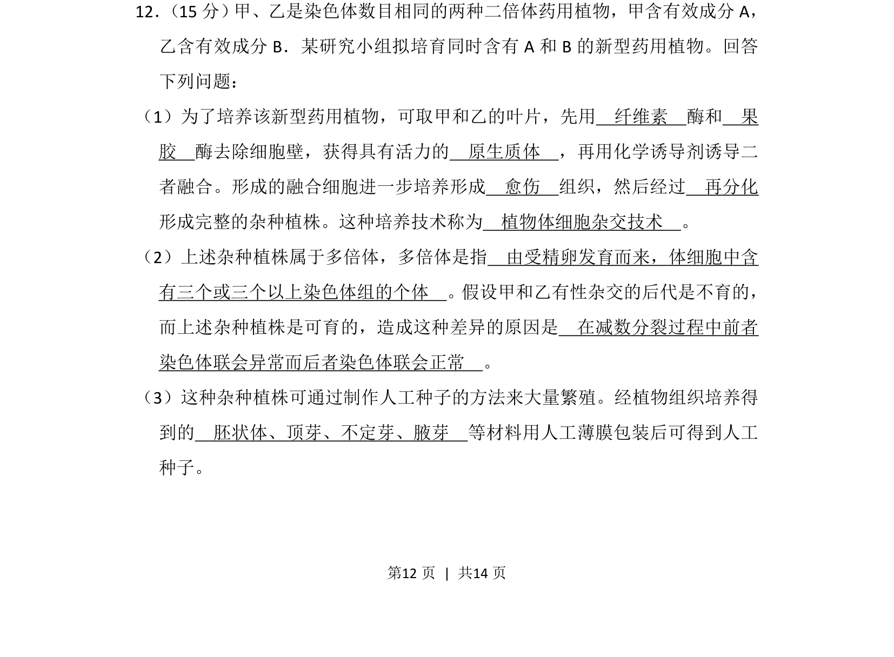
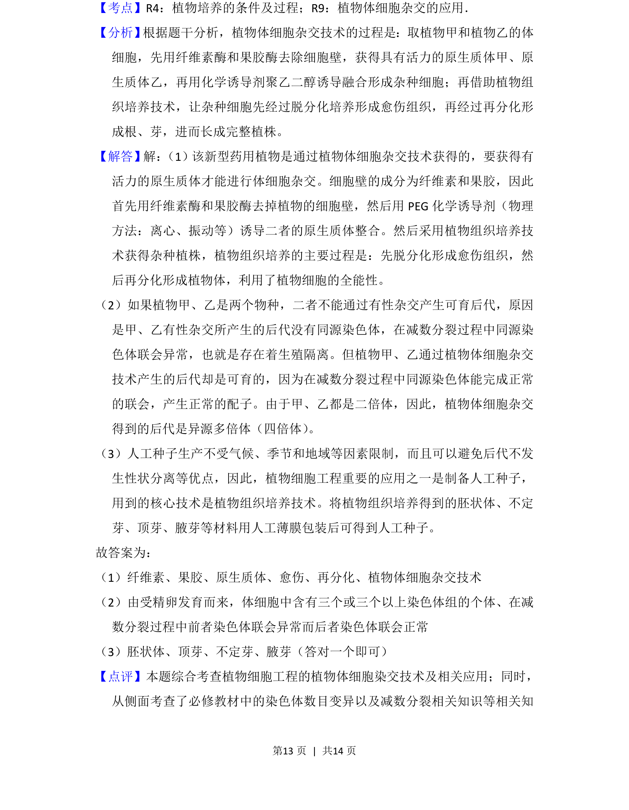

2013-新课标Ⅱ-12
考点：植物体细胞杂交 多倍体 人工种子
题面


摘要
本题为生物选做题，考查植物体细胞杂交技术、多倍体概念及人工种子制备。
关联考点
答案与解析

📄 原 PDF 第 12 页：
素材/真题/吉林/2008-2024·（吉林）生物高考真题/2013年高考生物试卷（新课标Ⅱ）（解析卷）.pdf
题干文本
12． （15分） 甲、乙是染色体数目相同的两种二倍体药用植物，甲含有效成分A， 乙含有效成分B．某研究小组拟培育同时含有A和B的新型药用植物。回答 下列问题： （1）为了培养该新型药用植物，可取甲和乙的叶片，先用 纤维素 酶和 果 胶 酶去除细胞壁，获得具有活力的 原生质体 ，再用化学诱导剂诱导二 者融合。形成的融合细胞进一步培养形成 愈伤 组织，然后经过 再分化 形成完整的杂种植株。这种培养技术称为 植物体细胞杂交技术 。 （2）上述杂种植株属于多倍体，多倍体是指 由受精卵发育而来，体细胞中含 有三个或三个以上染色体组的个体 。假设甲和乙有性杂交的后代是不育的， 而上述杂种植株是可育的，造成这种差异的原因是 在减数分裂过程中前者 染色体联会异常而后者染色体联会正常 。 （3）这种杂种植株可通过制作人工种子的方法来大量繁殖。经植物组织培养得 到的 胚状体、顶芽、不定芽、腋芽 等材料用人工薄膜包装后可得到人工 种子。